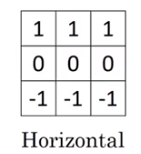
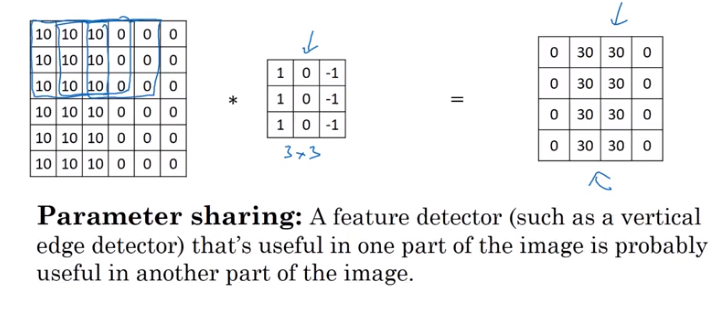

Convolution Intuition
What Is It?
Convolution is a technique that is largely used in Image data as a method of abstracting simple features such as edges or color scale. It is an elegant technique, used in earlier layers of deep image networks to dramatically reduce computation and extract component features used in assembling more complicated features for later layers in the network.
Furthermore, in addition to learning the simple-feature characteristics on your data, the convolutional filter also *implicitly encodes the location* as well.
Sliding Scale
Essentially, the convolution operation involves taking a convolution filter of some fixed shape and values and sliding over our image and evaluating:
- An element-wise product
- A combined sum
And assigning it to a single cell in the output matrix, as below
from IPython.display import Image
Image('images/conv_sliding.png')
Edge Detection
The filter above can be used to detect vertical edges when scanned over the image
Image('images/conv_vert_edge.png')
Similarly, you could find horizontal edges using the following
Image('images/conv_horiz_edge.png')
As Parameters
Of course, not every edge or visual feature worth detecting fits a neat, linear boundary where you can employ close relatives to identity matricies.
Thus, your trained features in a Convolutional Layer are the actual weights of the filters you use to convolve over your image.
Image('images/conv_variable_filter.png')
In 3d
We can also apply these same techniques to data expressed in multiple dimension. For instance, whereas the greyscale images above were simple pixels with values between 0 and 255, color images have that same structure but with a dimension for each RGB channel.
No matter, though, as long as the final dimension of our filter is the same as our original image, we can do basically the same convolution operation.
Image('images/convolving_3d.png')
Why Convolution
Intuitively, the idea of “find simple features and assemble them into complex features at later layers” makes sense, but as mentioned above, there are also great mechanical benefits of using convolution to process image data.
Andrew Ng does a great job outlining this.
Reduced Complexity
Say our input data is RGB and 32x32.
We know that we want to represent the first hidden layer as 28x28x6. By using a traditional Neural Network layer, we’d wind up training a weight for every single pair of nodes betwen the two, which amounts to nearly 14 million weights.
On the other hand, training 6 5x5 filters (plus a bias unit for each) gives us dramatically less weights for our model to sweat over.
Image('images/why_conv_size.png')
Parameter Sharing
Similarly, if something like “vertical edge detection” is useful for our model, it’s a no-brainer that we’d want to learn how to do that than hope that we independently learn both the existence and potential usefulness of each vertical edge in a given image.
Image('images/why_conv_features.png')
Sparsity of Connections
Finally, Andrew also outlines a concept called translation invariance wherein the learned convolution features don’t get hung up when your picture of a cat is on the left half of your image vs your right. Early layers detect the general shapes, which activate later layers to send those areas of the image to the “is this cat-like” layers– never accidentally defining “cat-ness” with respect to any sort of location (which is sound science, as we all know that cats are more liquid than solid).
Best Practices in Deep Network Architectures
Again, convolution serves to develop a series of simple features up front, which are then used by later layers to generate increasingly complex features. Thus, the number of convolutional filters increases as we go deeper.
To elaborate more, early filters can only see some of the data, so there can only be a few patterns. Later layers can see exponentially more patterns, so we expand our number of filters accordingly.
Image('images/translation_tolerance.png')